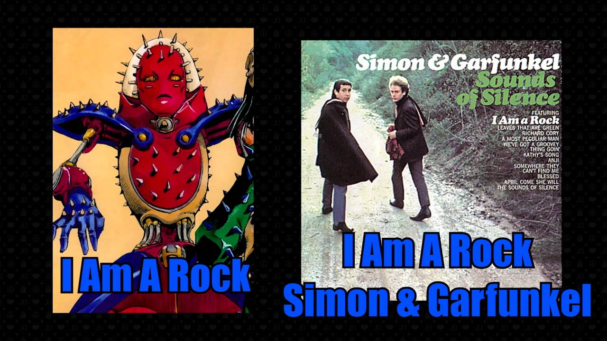
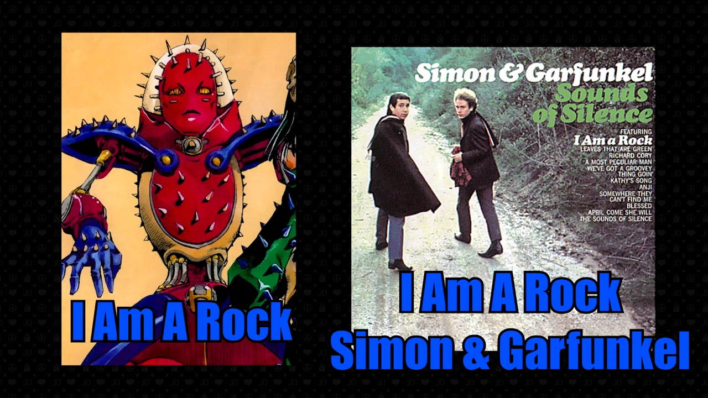

Ici vous pourrez découvrir l'influence (et les influences) de Jojo dans la Pop-culture !
Inspirations, memes,produits dérivés, tout sera répertorié ici !
 


Araki s'inspire principalement de magazines de mode comme V magazine, Versace ou encore Argentic pour donner des poses atypiques à ses personnages. Il reprend aussi des poses de chanteurs ou groupes comme Pearl Jam ou David Bowie.
Pour approfondir les références voici une page en anglais qui répertorie toutes les références : Fandom Jojo
L'oeuvre d'Araki est adapté en film et OAV : la première série d'OAV édition collector est sortie en 2010, la seconde axé sur Rohan Kishibe "Thus spoke Kishibe Rohan" est encore en cours.
Jojo a aussi bénéficié de nombreux jeux :
Coffret collector première OAV
Oav "Thus spoke Kishibe Rohan"
(Ainsi parlait Kishibe Rohan)
Heritage for the future

GioGio no Kimyō na Bōken :
Ōgon no Kaze
JoJo's Bizarre Adventure :
All Star Battle
JoJo's Bizarre Adventure :
Eyes of Heaven
Jolyne Fly High with GUCCI
Golden Wind x Seiko
Jojo à une communauté très active, et est une source presque infinie de "meme", des blagues, qu'ils n'hésitent pas à exploiter : du "Killer queen has already touched this" au "No one can just deflect the emerauld splash", il y en a pour tous les goûts.
"Walking Dio", souvent parodié
"No one can just deflect
the emerauld splash"
"Killer Queen has already touched this"
Compilation de meme sur jojo